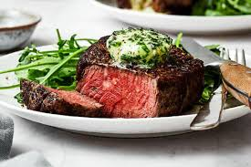

Filet Mignon recipe

Description
Filet mignon is a tender, melt-in-your-mouth steak cut that's perfect for a luxurious dinner. This version is pan-seared for a perfect crust and topped with a rich garlic herb butter.
Ingredients
- 2 filet mignon steaks (about 1.5 inches thick)
- Salt
- Freshly ground black pepper
- 1 tablespoon olive oil
- 2 tablespoons butter
- 2 garlic cloves (smashed)
- 2 sprigs fresh thyme
- 1 sprig fresh rosemary
Steps
- Let the steaks come to room temperature (about 30 minutes). Pat dry and season generously with salt and pepper.
- Heat olive oil in a heavy skillet (cast iron preferred) over high heat until shimmering.
- Sear the steaks for 2–3 minutes per side until a crust forms.
- Lower heat to medium. Add butter, garlic, thyme, and rosemary. Tilt the pan and spoon the melted butter over the steaks for 1–2 minutes.
- Transfer steaks to a plate and let rest for 5 minutes before serving.